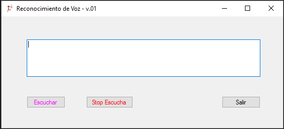

Reconocimiento de Voz
Introduction
El software de la tecnología de voz de escritorio de Windows ofrece una infraestructura de reconocimiento de voz básicas que digitaliza señales acústica y recupera las palabras y los elementos de voz desde la entrada de audio.
Las aplicaciones utilizan el System.Speech.Recognition espacio de nombres para obtener acceso y ampliar esta tecnología de reconocimiento de voz básica mediante la definición de algoritmos para identificar y actuar sobre los patrones de palabras o frases específicas y administrar el comportamiento en tiempo de ejecución de esta infraestructura de voz.
El reconocimiento de voz incluye un tiempo de ejecución de voz, varias API de reconocimiento para programar el tiempo de ejecución, gramáticas listas para usar para el dictado y la búsqueda en Internet, y una interfaz de usuario predeterminada del sistema que ayuda a los usuarios a descubrir y usar las funciones de reconocimiento de voz.
Configurar la fuente de audio
Comprueba que el dispositivo tenga un micrófono o un equivalente.
Configura la función Micrófono del dispositivo (DeviceCapability) en el Manifiesto del paquete de la aplicación (archivo package.appxmanifest) para obtener acceso a la fuente de audio del micrófono. Esto permite que la aplicación grabe audio con los micrófonos conectados.
Consulta el tema sobre declaraciones de funcionalidades de aplicación.
Reconocer la entrada de voz
Una restricción define las palabras y las frases (vocabulario) que una aplicación reconoce en una entrada de voz. Las restricciones son fundamentales para el reconocimiento de voz y mejoran la precisión del reconocimiento de voz de tu aplicación.
https://msdn.microsoft.com/es-sv/library/system.speech.recognition.aspx?tduid=(9e470a736dcc454cedb3e6175a4911fd)(256380)(2459594)(TnL5HPStwNw-QMsorr4C3E8RNLMzqgHxBg)()
Description


using System; using System.Collections.Generic; using System.ComponentModel; using System.Data; using System.Drawing; using System.Linq; using System.Text; using System.Threading.Tasks; using System.Windows.Forms; using System.Speech.Recognition; // Para el reconocimiento de voz namespace Reconocimiento_de_voz_1 { public partial class Form1 : Form { // Inicializamos motor de reconocimiento. SpeechRecognitionEngine reconocimiento_de_voz = new SpeechRecognitionEngine(); string palabras; public Form1() { InitializeComponent(); } private void button1_Click(object sender, EventArgs e) //Boton escuchar. Configuración del reconocimiento { //Inicia la escucha con el dispositivo de entrada de audio predeterminado reconocimiento_de_voz.SetInputToDefaultAudioDevice(); // Usaremos el microfono predeterminado del sistema reconocimiento_de_voz.LoadGrammar(new DictationGrammar()); //Carga la gramatica de Windows reconocimiento_de_voz.SpeechRecognized += te_escucho; // Controlador de eventos. Se ejecutara al reconocer reconocimiento_de_voz.RecognizeAsync(RecognizeMode.Multiple); //Iniciamos reconocimiento label1.Text = "Te estoy escuchando cuentame: "; } void te_escucho(object sender, SpeechRecognizedEventArgs e) { palabras = e.Result.Text; // La variable palabras del tipo string toma las palabras reconocidas. textBox1.Text = palabras; // Muestra las palabras reconocidas en el textbox } private void button3_Click(object sender, EventArgs e) // Boton detener escucha { reconocimiento_de_voz.RecognizeAsyncStop(); //Detiene la escucha textBox1.Clear(); //limpia el textbox } private void button2_Click(object sender, EventArgs e) // Boton Salir { Application.Exit(); } } }
using System; using System.Collections.Generic; using System.ComponentModel; using System.Data; using System.Drawing; using System.Linq; using System.Text; using System.Threading.Tasks; using System.Windows.Forms; using System.Speech.Recognition; // Para el reconocimiento de voz namespace Reconocimiento_de_voz_1 { public partial class Form1 : Form { // Inicializamos motor de reconocimiento. SpeechRecognitionEngine reconocimiento_de_voz = new SpeechRecognitionEngine(); string palabras; public Form1() { InitializeComponent(); } private void button1_Click(object sender, EventArgs e) //Boton escuchar. Configuración del reconocimiento { //Inicia la escucha con el dispositivo de entrada de audio predeterminado reconocimiento_de_voz.SetInputToDefaultAudioDevice(); // Usaremos el microfono predeterminado del sistema reconocimiento_de_voz.LoadGrammar(new DictationGrammar()); //Carga la gramatica de Windows reconocimiento_de_voz.SpeechRecognized += te_escucho; // Controlador de eventos. Se ejecutara al reconocer reconocimiento_de_voz.RecognizeAsync(RecognizeMode.Multiple); //Iniciamos reconocimiento label1.Text = "Te estoy escuchando cuentame: "; } void te_escucho(object sender, SpeechRecognizedEventArgs e) { palabras = e.Result.Text; // La variable palabras del tipo string toma las palabras reconocidas. textBox1.Text = palabras; // Muestra las palabras reconocidas en el textbox } private void button3_Click(object sender, EventArgs e) // Boton detener escucha { reconocimiento_de_voz.RecognizeAsyncStop(); //Detiene la escucha textBox1.Clear(); //limpia el textbox } private void button2_Click(object sender, EventArgs e) // Boton Salir { Application.Exit(); } } }